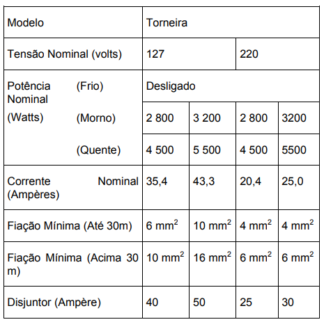

🔹 Ir para Problema 81 | 🔹 Ir para Problema 83
119. (ENEM 2010)
Observe a tabela técnica de uma torneira elétrica. O modelo de maior potência foi projetado para 220 V, mas foi conectado por engano a uma rede de 127 V, operando em sua potência máxima (5,5 kW em 220 V). Qual será a potência aproximada dissipada pela torneira?

1) Mantendo a resistência constante, a potência varia com:
2) Fórmula aplicada:
3) O valor aproximado obtido é:
Assinale a alternativa correta: